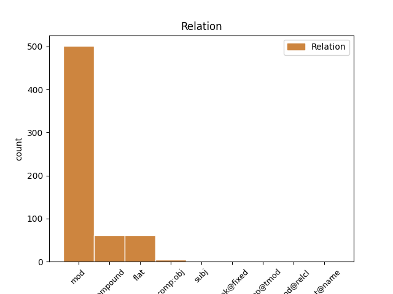
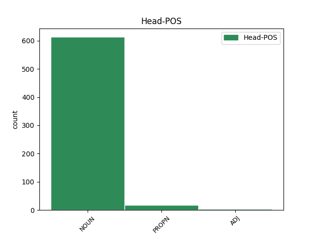
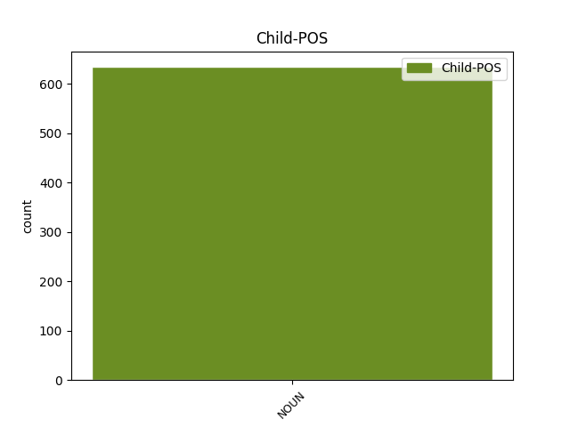

Distribution of features within this leaf



Agreement Rules sorted by frequency.
- When the dependent token is the modifer(mod) of the head token, and the head token is NOUN and the dependent token is NOUN.
1 (2) _ _ _ _ 0 _ _ _
2 Is _ _ _ _ 0 _ _ _
3 é _ _ _ _ 0 _ _ _
4 méid _ _ _ _ 0 _ _ _
5 a _ _ _ _ 0 _ _ _
6 chinnfidh _ _ _ _ 0 _ _ _
7 an _ _ _ _ 0 _ _ _
8 t-údarás _ _ _ _ 0 _ _ _
9 tithíochta _ _ _ _ 0 _ _ _
10 a _ _ _ _ 0 _ _ _
11 bheidh _ _ _ _ 0 _ _ _
12 i _ _ _ _ 0 _ _ _
13 ndeontas _ _ _ _ 0 _ _ _
14 forlíontach _ _ _ _ 0 _ _ _
15 faoin _ _ _ _ 0 _ _ _
16 alt _ _ _ _ 0 _ _ _
17 seo _ _ _ _ 0 _ _ _
18 ach _ _ _ _ 0 _ _ _
19 ní _ _ _ _ 0 _ _ _
20 bheidh _ _ _ _ 0 _ _ _
21 sé _ _ _ _ 0 _ _ _
22 níos _ _ _ _ 0 _ _ _
23 mó _ _ _ _ 0 _ _ _
24 ná _ _ _ _ 0 _ _ _
25 méid _ _ _ _ 0 _ _ _
26 an _ _ _ _ 0 _ _ _
27 deontais _ _ _ _ 0 _ _ _
28 ón _ _ _ _ 0 _ _ _
29 Aire _ _ _ _ 0 _ _ _
30 ná _ _ _ _ 0 _ _ _
31 an _ _ _ _ 0 _ _ _
32 méid _ _ _ _ 0 _ _ _
33 , _ _ _ _ 0 _ _ _
34 nuair _ _ _ _ 0 _ _ _
35 a _ _ _ _ 0 _ _ _
36 chuirfear _ _ _ _ 0 _ _ _
37 é _ _ _ _ 0 _ _ _
38 sin _ _ _ _ 0 _ _ _
39 le _ _ _ _ 0 _ _ _
40 méid _ _ _ _ 0 _ _ _
41 an _ _ _ _ 0 _ _ _
42 deontais _ _ _ _ 0 _ _ _
43 ón _ _ _ _ 0 _ _ _
44 Aire _ _ _ _ 0 _ _ _
45 , _ _ _ _ 0 _ _ _
46 is _ _ _ _ 0 _ _ _
47 comhionann _ _ _ _ 0 _ _ _
48 le _ _ _ _ 0 _ _ _
49 dhá _ _ _ _ 0 _ _ _
50 thrian _ _ _ _ 0 _ _ _
51 den _ _ _ _ 0 _ _ _
52 mhéid _ _ _ _ 0 _ _ _
53 a _ _ _ _ 0 _ _ _
54 measfaidh _ _ _ _ 0 _ _ _
55 an _ _ _ _ 0 _ _ _
56 tAire _ _ _ _ 0 _ _ _
57 gurb _ _ _ _ 0 _ _ _
58 é _ _ _ _ 0 _ _ _
59 costas _ _ _ _ 0 _ _ _
60 na _ _ _ _ 0 _ _ _
61 hoibre obair NOUN Noun Case=Gen|Definite=Def|Gender=Fem|Number=Sing 0 _ _ _
62 athfhoirgniúcháin athfhoirgniúcháin NOUN Noun Case=Gen|Gender=Masc|Number=Sing 61 mod _ _
63 é _ _ _ _ 0 _ _ _
64 . _ _ _ _ 0 _ _ _
1 (3) _ _ _ _ 0 _ _ _
2 Féadfaidh _ _ _ _ 0 _ _ _
3 an _ _ _ _ 0 _ _ _
4 tAire _ _ _ _ 0 _ _ _
5 , _ _ _ _ 0 _ _ _
6 le _ _ _ _ 0 _ _ _
7 toiliú _ _ _ _ 0 _ _ _
8 an _ _ _ _ 0 _ _ _
9 Aire aire NOUN Noun Case=Gen|Definite=Def|Gender=Masc|Number=Sing 0 _ _ _
10 Airgeadais airgeadas NOUN Noun Case=Gen|Gender=Masc|Number=Sing 9 flat _ SpaceAfter=No
11 , _ _ _ _ 0 _ _ _
12 scéim _ _ _ _ 0 _ _ _
13 nó _ _ _ _ 0 _ _ _
14 scéimeanna _ _ _ _ 0 _ _ _
15 a _ _ _ _ 0 _ _ _
16 dhéanamh _ _ _ _ 0 _ _ _
17 chun _ _ _ _ 0 _ _ _
18 críocha _ _ _ _ 0 _ _ _
19 an _ _ _ _ 0 _ _ _
20 ailt _ _ _ _ 0 _ _ _
21 seo _ _ _ _ 0 _ _ _
22 ( _ _ _ _ 0 _ _ _
23 is _ _ _ _ 0 _ _ _
24 scéim _ _ _ _ 0 _ _ _
25 nó _ _ _ _ 0 _ _ _
26 scéimeanna _ _ _ _ 0 _ _ _
27 a _ _ _ _ 0 _ _ _
28 ngairtear _ _ _ _ 0 _ _ _
29 ' _ _ _ _ 0 _ _ _
30 scéim _ _ _ _ 0 _ _ _
31 ' _ _ _ _ 0 _ _ _
32 di _ _ _ _ 0 _ _ _
33 nó _ _ _ _ 0 _ _ _
34 do _ _ _ _ 0 _ _ _
35 gach _ _ _ _ 0 _ _ _
36 ceann _ _ _ _ 0 _ _ _
37 díobh _ _ _ _ 0 _ _ _
38 san _ _ _ _ 0 _ _ _
39 alt _ _ _ _ 0 _ _ _
40 seo _ _ _ _ 0 _ _ _
41 ) _ _ _ _ 0 _ _ _
42 . _ _ _ _ 0 _ _ _
1 Ní _ _ _ _ 0 _ _ _
2 raibh _ _ _ _ 0 _ _ _
3 mé _ _ _ _ 0 _ _ _
4 ach _ _ _ _ 0 _ _ _
5 timpeall _ _ _ _ 0 _ _ _
6 is _ _ _ _ 0 _ _ _
7 mí _ _ _ _ 0 _ _ _
8 sa _ _ _ _ 0 _ _ _
9 mbaile _ _ _ _ 0 _ _ _
10 , _ _ _ _ 0 _ _ _
11 nó _ _ _ _ 0 _ _ _
12 rud rud NOUN Noun Case=NomAcc|Gender=Masc|Number=Sing 0 _ _ _
13 eicínt eicínt NOUN Noun Case=NomAcc|Gender=Fem|Number=Sing 12 compound _ _
14 beagán _ _ _ _ 0 _ _ _
15 níos _ _ _ _ 0 _ _ _
16 mó _ _ _ _ 0 _ _ _
17 , _ _ _ _ 0 _ _ _
18 nuair _ _ _ _ 0 _ _ _
19 a _ _ _ _ 0 _ _ _
20 fuair _ _ _ _ 0 _ _ _
21 mé _ _ _ _ 0 _ _ _
22 fliú _ _ _ _ 0 _ _ _
23 mór _ _ _ _ 0 _ _ _
24 a _ _ _ _ 0 _ _ _
25 bhí _ _ _ _ 0 _ _ _
26 ag _ _ _ _ 0 _ _ _
27 goil _ _ _ _ 0 _ _ _
28 thart _ _ _ _ 0 _ _ _
29 . _ _ _ _ 0 _ _ _
1 Dia's Dia PROPN Noun Case=NomAcc|Gender=Masc|Number=Sing 0 _ _ _
2 Muire Muire NOUN Noun Case=NomAcc|Gender=Fem|Number=Sing 1 mod _ _
3 duit _ _ _ _ 0 _ _ _
4 ... _ _ _ _ 0 _ _ _
5 ... _ _ _ _ 0 _ _ _
6 sea _ _ _ _ 0 _ _ _
7 ... _ _ _ _ 0 _ _ _
8 ... _ _ _ _ 0 _ _ _
9 . _ _ _ _ 0 _ _ _
1 (4) _ _ _ _ 0 _ _ _
2 Gach _ _ _ _ 0 _ _ _
3 rialachán _ _ _ _ 0 _ _ _
4 a _ _ _ _ 0 _ _ _
5 déanfar _ _ _ _ 0 _ _ _
6 fén _ _ _ _ 0 _ _ _
7 alt _ _ _ _ 0 _ _ _
8 so _ _ _ _ 0 _ _ _
9 leagfar _ _ _ _ 0 _ _ _
10 é _ _ _ _ 0 _ _ _
11 fé _ _ _ _ 0 _ _ _
12 bhráid _ _ _ _ 0 _ _ _
13 gach _ _ _ _ 0 _ _ _
14 Tighe Tighe PROPN Noun Case=NomAcc|Gender=Masc|Number=Sing 0 _ _ _
15 den _ _ _ _ 0 _ _ _
16 Oireachtas oireachtas NOUN Noun Case=NomAcc|Gender=Masc|Number=Sing 14 flat _ _
17 chó _ _ _ _ 0 _ _ _
18 luath _ _ _ _ 0 _ _ _
19 agus _ _ _ _ 0 _ _ _
20 is _ _ _ _ 0 _ _ _
21 féidir _ _ _ _ 0 _ _ _
22 é _ _ _ _ 0 _ _ _
23 tar _ _ _ _ 0 _ _ _
24 éis _ _ _ _ 0 _ _ _
25 a _ _ _ _ 0 _ _ _
26 dhéanta _ _ _ _ 0 _ _ _
27 agus _ _ _ _ 0 _ _ _
28 má _ _ _ _ 0 _ _ _
29 dhineann _ _ _ _ 0 _ _ _
30 aon _ _ _ _ 0 _ _ _
31 Tigh _ _ _ _ 0 _ _ _
32 acu _ _ _ _ 0 _ _ _
33 san _ _ _ _ 0 _ _ _
34 laistigh _ _ _ _ 0 _ _ _
35 den _ _ _ _ 0 _ _ _
36 lá _ _ _ _ 0 _ _ _
37 is _ _ _ _ 0 _ _ _
38 fiche _ _ _ _ 0 _ _ _
39 a _ _ _ _ 0 _ _ _
40 shuidhfidh _ _ _ _ 0 _ _ _
41 an _ _ _ _ 0 _ _ _
42 Tigh _ _ _ _ 0 _ _ _
43 sin _ _ _ _ 0 _ _ _
44 ina _ _ _ _ 0 _ _ _
45 dhiaidh _ _ _ _ 0 _ _ _
46 sin _ _ _ _ 0 _ _ _
47 rún _ _ _ _ 0 _ _ _
48 do _ _ _ _ 0 _ _ _
49 rith _ _ _ _ 0 _ _ _
50 ag _ _ _ _ 0 _ _ _
51 cur _ _ _ _ 0 _ _ _
52 an _ _ _ _ 0 _ _ _
53 rialacháin _ _ _ _ 0 _ _ _
54 sin _ _ _ _ 0 _ _ _
55 ar _ _ _ _ 0 _ _ _
56 nea-mbrí _ _ _ _ 0 _ _ _
57 beidh _ _ _ _ 0 _ _ _
58 an _ _ _ _ 0 _ _ _
59 rialachán _ _ _ _ 0 _ _ _
60 san _ _ _ _ 0 _ _ _
61 ar _ _ _ _ 0 _ _ _
62 nea-mbrí _ _ _ _ 0 _ _ _
63 dá _ _ _ _ 0 _ _ _
64 réir _ _ _ _ 0 _ _ _
65 sin _ _ _ _ 0 _ _ _
66 ach _ _ _ _ 0 _ _ _
67 beidh _ _ _ _ 0 _ _ _
68 san _ _ _ _ 0 _ _ _
69 gan _ _ _ _ 0 _ _ _
70 dochar _ _ _ _ 0 _ _ _
71 do _ _ _ _ 0 _ _ _
72 dhleathacht _ _ _ _ 0 _ _ _
73 éinní _ _ _ _ 0 _ _ _
74 a _ _ _ _ 0 _ _ _
75 dineadh _ _ _ _ 0 _ _ _
76 roimhe _ _ _ _ 0 _ _ _
77 sin _ _ _ _ 0 _ _ _
78 fén _ _ _ _ 0 _ _ _
79 rialachán _ _ _ _ 0 _ _ _
80 san _ _ _ _ 0 _ _ _
81 . _ _ _ _ 0 _ _ _
1 (4) _ _ _ _ 0 _ _ _
2 Breithneoidh _ _ _ _ 0 _ _ _
3 an _ _ _ _ 0 _ _ _
4 Ard-Chomhairle _ _ _ _ 0 _ _ _
5 gach _ _ _ _ 0 _ _ _
6 aithris _ _ _ _ 0 _ _ _
7 chúise _ _ _ _ 0 _ _ _
8 agus _ _ _ _ 0 _ _ _
9 na _ _ _ _ 0 _ _ _
10 nótaí _ _ _ _ 0 _ _ _
11 ( _ _ _ _ 0 _ _ _
12 más _ _ _ _ 0 _ _ _
13 ann _ _ _ _ 0 _ _ _
14 dóibh _ _ _ _ 0 _ _ _
15 ) _ _ _ _ 0 _ _ _
16 ina _ _ _ _ 0 _ _ _
17 taobh _ _ _ _ 0 _ _ _
18 a _ _ _ _ 0 _ _ _
19 leagfar _ _ _ _ 0 _ _ _
20 fé _ _ _ _ 0 _ _ _
21 n-a _ _ _ _ 0 _ _ _
22 bráid _ _ _ _ 0 _ _ _
23 fén _ _ _ _ 0 _ _ _
24 alt _ _ _ _ 0 _ _ _
25 so _ _ _ _ 0 _ _ _
26 agus _ _ _ _ 0 _ _ _
27 más _ _ _ _ 0 _ _ _
28 deimhin _ _ _ _ 0 _ _ _
29 léi _ _ _ _ 0 _ _ _
30 tar _ _ _ _ 0 _ _ _
31 éis _ _ _ _ 0 _ _ _
32 an _ _ _ _ 0 _ _ _
33 bhreithnithe _ _ _ _ 0 _ _ _
34 sin _ _ _ _ 0 _ _ _
35 go _ _ _ _ 0 _ _ _
36 bhfuil _ _ _ _ 0 _ _ _
37 an _ _ _ _ 0 _ _ _
38 cúrsa _ _ _ _ 0 _ _ _
39 stuidéir _ _ _ _ 0 _ _ _
40 agus _ _ _ _ 0 _ _ _
41 na _ _ _ _ 0 _ _ _
42 scrúduithe _ _ _ _ 0 _ _ _
43 le _ _ _ _ 0 _ _ _
44 n-a _ _ _ _ 0 _ _ _
45 mbaineann _ _ _ _ 0 _ _ _
46 an _ _ _ _ 0 _ _ _
47 aithris _ _ _ _ 0 _ _ _
48 chúise _ _ _ _ 0 _ _ _
49 sin _ _ _ _ 0 _ _ _
50 gan _ _ _ _ 0 _ _ _
51 bheith _ _ _ _ 0 _ _ _
52 de _ _ _ _ 0 _ _ _
53 shaghas _ _ _ _ 0 _ _ _
54 a _ _ _ _ 0 _ _ _
55 chuireann _ _ _ _ 0 _ _ _
56 in _ _ _ _ 0 _ _ _
57 áirithe _ _ _ _ 0 _ _ _
58 go _ _ _ _ 0 _ _ _
59 mbeidh _ _ _ _ 0 _ _ _
60 ag _ _ _ _ 0 _ _ _
61 daoine _ _ _ _ 0 _ _ _
62 , _ _ _ _ 0 _ _ _
63 a _ _ _ _ 0 _ _ _
64 gheobhaidh _ _ _ _ 0 _ _ _
65 teisteas _ _ _ _ 0 _ _ _
66 tástála _ _ _ _ 0 _ _ _
67 ón _ _ _ _ 0 _ _ _
68 gcoláiste _ _ _ _ 0 _ _ _
69 no _ _ _ _ 0 _ _ _
70 ón _ _ _ _ 0 _ _ _
71 gcólucht _ _ _ _ 0 _ _ _
72 a _ _ _ _ 0 _ _ _
73 cheangalann cheangalann NOUN Noun Case=NomAcc|Gender=Fem|Number=Sing 0 _ _ _
74 ar _ _ _ _ 0 _ _ _
75 dhaoine _ _ _ _ 0 _ _ _
76 an _ _ _ _ 0 _ _ _
77 cúrsa cúrsa NOUN Noun Case=NomAcc|Definite=Def|Gender=Masc|Number=Sing 73 comp:obj _ _
78 stuidéir _ _ _ _ 0 _ _ _
79 agus _ _ _ _ 0 _ _ _
80 na _ _ _ _ 0 _ _ _
81 scrúduithe _ _ _ _ 0 _ _ _
82 sin _ _ _ _ 0 _ _ _
83 do _ _ _ _ 0 _ _ _
84 chur _ _ _ _ 0 _ _ _
85 díobh _ _ _ _ 0 _ _ _
86 , _ _ _ _ 0 _ _ _
87 an _ _ _ _ 0 _ _ _
88 oilteacht _ _ _ _ 0 _ _ _
89 agus _ _ _ _ 0 _ _ _
90 an _ _ _ _ 0 _ _ _
91 t-eolas _ _ _ _ 0 _ _ _
92 is _ _ _ _ 0 _ _ _
93 gá _ _ _ _ 0 _ _ _
94 chun _ _ _ _ 0 _ _ _
95 a _ _ _ _ 0 _ _ _
96 ngairm _ _ _ _ 0 _ _ _
97 do _ _ _ _ 0 _ _ _
98 chleachta _ _ _ _ 0 _ _ _
99 go _ _ _ _ 0 _ _ _
100 héifeachtúil _ _ _ _ 0 _ _ _
101 , _ _ _ _ 0 _ _ _
102 féadfidh _ _ _ _ 0 _ _ _
103 an _ _ _ _ 0 _ _ _
104 Ard-Chomhairle _ _ _ _ 0 _ _ _
105 , _ _ _ _ 0 _ _ _
106 le _ _ _ _ 0 _ _ _
107 hordú _ _ _ _ 0 _ _ _
108 , _ _ _ _ 0 _ _ _
109 a _ _ _ _ 0 _ _ _
110 fhaisnéis _ _ _ _ 0 _ _ _
111 ná _ _ _ _ 0 _ _ _
112 déanfidh _ _ _ _ 0 _ _ _
113 aon _ _ _ _ 0 _ _ _
114 teisteas _ _ _ _ 0 _ _ _
115 tástála _ _ _ _ 0 _ _ _
116 a _ _ _ _ 0 _ _ _
117 dheonfidh _ _ _ _ 0 _ _ _
118 an _ _ _ _ 0 _ _ _
119 coláiste _ _ _ _ 0 _ _ _
120 no _ _ _ _ 0 _ _ _
121 an _ _ _ _ 0 _ _ _
122 cólucht _ _ _ _ 0 _ _ _
123 san _ _ _ _ 0 _ _ _
124 d' _ _ _ _ 0 _ _ _
125 éinne _ _ _ _ 0 _ _ _
126 ar _ _ _ _ 0 _ _ _
127 an _ _ _ _ 0 _ _ _
128 dáta _ _ _ _ 0 _ _ _
129 no _ _ _ _ 0 _ _ _
130 tar _ _ _ _ 0 _ _ _
131 éis _ _ _ _ 0 _ _ _
132 an _ _ _ _ 0 _ _ _
133 dáta _ _ _ _ 0 _ _ _
134 a _ _ _ _ 0 _ _ _
135 luadhfar _ _ _ _ 0 _ _ _
136 chuige _ _ _ _ 0 _ _ _
137 sin _ _ _ _ 0 _ _ _
138 san _ _ _ _ 0 _ _ _
139 ordú _ _ _ _ 0 _ _ _
140 san _ _ _ _ 0 _ _ _
141 ceart _ _ _ _ 0 _ _ _
142 chun _ _ _ _ 0 _ _ _
143 a _ _ _ _ 0 _ _ _
144 chláruithe _ _ _ _ 0 _ _ _
145 sa _ _ _ _ 0 _ _ _
146 chlár _ _ _ _ 0 _ _ _
147 do _ _ _ _ 0 _ _ _
148 bhronna _ _ _ _ 0 _ _ _
149 ar _ _ _ _ 0 _ _ _
150 an _ _ _ _ 0 _ _ _
151 duine _ _ _ _ 0 _ _ _
152 sin _ _ _ _ 0 _ _ _
153 . _ _ _ _ 0 _ _ _
1 Dhá _ _ _ _ 0 _ _ _
2 arm arm NOUN Noun Case=NomAcc|Form=Len|Gender=Masc|Number=Sing 0 _ _ _
3 aigne _ _ _ _ 0 _ _ _
4 an _ _ _ _ 0 _ _ _
5 dá _ _ _ _ 0 _ _ _
6 theanga teanga NOUN Noun Case=NomAcc|Definite=Def|Gender=Fem|Number=Sing 2 subj _ SpaceAfter=No
7 , _ _ _ _ 0 _ _ _
8 ba _ _ _ _ 0 _ _ _
9 ghnáth _ _ _ _ 0 _ _ _
10 a _ _ _ _ 0 _ _ _
11 rá _ _ _ _ 0 _ _ _
12 , _ _ _ _ 0 _ _ _
13 ach _ _ _ _ 0 _ _ _
14 is _ _ _ _ 0 _ _ _
15 arm _ _ _ _ 0 _ _ _
16 eile _ _ _ _ 0 _ _ _
17 agam _ _ _ _ 0 _ _ _
18 féin _ _ _ _ 0 _ _ _
19 an _ _ _ _ 0 _ _ _
20 t-am _ _ _ _ 0 _ _ _
21 , _ _ _ _ 0 _ _ _
22 agus _ _ _ _ 0 _ _ _
23 nach _ _ _ _ 0 _ _ _
24 scátálaim _ _ _ _ 0 _ _ _
25 ar _ _ _ _ 0 _ _ _
26 oighear _ _ _ _ 0 _ _ _
27 ach _ _ _ _ 0 _ _ _
28 go _ _ _ _ 0 _ _ _
29 dtumaim _ _ _ _ 0 _ _ _
30 agus _ _ _ _ 0 _ _ _
31 go _ _ _ _ 0 _ _ _
32 snámhaim _ _ _ _ 0 _ _ _
33 i _ _ _ _ 0 _ _ _
34 sruthanna _ _ _ _ 0 _ _ _
35 éagsúla _ _ _ _ 0 _ _ _
36 an _ _ _ _ 0 _ _ _
37 ama _ _ _ _ 0 _ _ _
38 . _ _ _ _ 0 _ _ _
1 Agus _ _ _ _ 0 _ _ _
2 ranganna rang NOUN Noun Case=NomAcc|Gender=Masc|Number=Plur 0 _ _ _
3 seiteanna _ _ _ _ 0 _ _ _
4 agus _ _ _ _ 0 _ _ _
5 céilí _ _ _ _ 0 _ _ _
6 do _ _ _ _ 0 _ _ _
7 dhaoine _ _ _ _ 0 _ _ _
8 fásta _ _ _ _ 0 _ _ _
9 gach _ _ _ _ 0 _ _ _
10 oíche oíche NOUN Noun Case=NomAcc|Gender=Fem|Number=Sing 2 udep@tmod _ _
11 Dé _ _ _ _ 0 _ _ _
12 Luain _ _ _ _ 0 _ _ _
13 ag _ _ _ _ 0 _ _ _
14 8.30 _ _ _ _ 0 _ _ _
15 . _ _ _ _ 0 _ _ _
1 (4) _ _ _ _ 0 _ _ _
2 Breithneoidh _ _ _ _ 0 _ _ _
3 an _ _ _ _ 0 _ _ _
4 Ard-Chomhairle _ _ _ _ 0 _ _ _
5 gach _ _ _ _ 0 _ _ _
6 aithris _ _ _ _ 0 _ _ _
7 chúise _ _ _ _ 0 _ _ _
8 agus _ _ _ _ 0 _ _ _
9 na _ _ _ _ 0 _ _ _
10 nótaí _ _ _ _ 0 _ _ _
11 ( _ _ _ _ 0 _ _ _
12 más _ _ _ _ 0 _ _ _
13 ann _ _ _ _ 0 _ _ _
14 dóibh _ _ _ _ 0 _ _ _
15 ) _ _ _ _ 0 _ _ _
16 ina _ _ _ _ 0 _ _ _
17 taobh _ _ _ _ 0 _ _ _
18 a _ _ _ _ 0 _ _ _
19 leagfar _ _ _ _ 0 _ _ _
20 fé _ _ _ _ 0 _ _ _
21 n-a _ _ _ _ 0 _ _ _
22 bráid _ _ _ _ 0 _ _ _
23 fén _ _ _ _ 0 _ _ _
24 alt _ _ _ _ 0 _ _ _
25 so _ _ _ _ 0 _ _ _
26 agus _ _ _ _ 0 _ _ _
27 más _ _ _ _ 0 _ _ _
28 deimhin _ _ _ _ 0 _ _ _
29 léi _ _ _ _ 0 _ _ _
30 tar _ _ _ _ 0 _ _ _
31 éis _ _ _ _ 0 _ _ _
32 an _ _ _ _ 0 _ _ _
33 bhreithnithe _ _ _ _ 0 _ _ _
34 sin _ _ _ _ 0 _ _ _
35 go _ _ _ _ 0 _ _ _
36 bhfuil _ _ _ _ 0 _ _ _
37 an _ _ _ _ 0 _ _ _
38 cúrsa _ _ _ _ 0 _ _ _
39 stuidéir _ _ _ _ 0 _ _ _
40 agus _ _ _ _ 0 _ _ _
41 na _ _ _ _ 0 _ _ _
42 scrúduithe _ _ _ _ 0 _ _ _
43 le _ _ _ _ 0 _ _ _
44 n-a _ _ _ _ 0 _ _ _
45 mbaineann _ _ _ _ 0 _ _ _
46 an _ _ _ _ 0 _ _ _
47 aithris _ _ _ _ 0 _ _ _
48 chúise _ _ _ _ 0 _ _ _
49 sin _ _ _ _ 0 _ _ _
50 gan _ _ _ _ 0 _ _ _
51 bheith _ _ _ _ 0 _ _ _
52 de _ _ _ _ 0 _ _ _
53 shaghas _ _ _ _ 0 _ _ _
54 a _ _ _ _ 0 _ _ _
55 chuireann _ _ _ _ 0 _ _ _
56 in _ _ _ _ 0 _ _ _
57 áirithe _ _ _ _ 0 _ _ _
58 go _ _ _ _ 0 _ _ _
59 mbeidh _ _ _ _ 0 _ _ _
60 ag _ _ _ _ 0 _ _ _
61 daoine _ _ _ _ 0 _ _ _
62 , _ _ _ _ 0 _ _ _
63 a _ _ _ _ 0 _ _ _
64 gheobhaidh _ _ _ _ 0 _ _ _
65 teisteas _ _ _ _ 0 _ _ _
66 tástála _ _ _ _ 0 _ _ _
67 ón _ _ _ _ 0 _ _ _
68 gcoláiste _ _ _ _ 0 _ _ _
69 no _ _ _ _ 0 _ _ _
70 ón _ _ _ _ 0 _ _ _
71 gcólucht gcólucht NOUN Noun Case=NomAcc|Gender=Masc|Number=Sing 0 _ _ _
72 a _ _ _ _ 0 _ _ _
73 cheangalann cheangalann NOUN Noun Case=NomAcc|Gender=Fem|Number=Sing 71 mod@relcl _ _
74 ar _ _ _ _ 0 _ _ _
75 dhaoine _ _ _ _ 0 _ _ _
76 an _ _ _ _ 0 _ _ _
77 cúrsa _ _ _ _ 0 _ _ _
78 stuidéir _ _ _ _ 0 _ _ _
79 agus _ _ _ _ 0 _ _ _
80 na _ _ _ _ 0 _ _ _
81 scrúduithe _ _ _ _ 0 _ _ _
82 sin _ _ _ _ 0 _ _ _
83 do _ _ _ _ 0 _ _ _
84 chur _ _ _ _ 0 _ _ _
85 díobh _ _ _ _ 0 _ _ _
86 , _ _ _ _ 0 _ _ _
87 an _ _ _ _ 0 _ _ _
88 oilteacht _ _ _ _ 0 _ _ _
89 agus _ _ _ _ 0 _ _ _
90 an _ _ _ _ 0 _ _ _
91 t-eolas _ _ _ _ 0 _ _ _
92 is _ _ _ _ 0 _ _ _
93 gá _ _ _ _ 0 _ _ _
94 chun _ _ _ _ 0 _ _ _
95 a _ _ _ _ 0 _ _ _
96 ngairm _ _ _ _ 0 _ _ _
97 do _ _ _ _ 0 _ _ _
98 chleachta _ _ _ _ 0 _ _ _
99 go _ _ _ _ 0 _ _ _
100 héifeachtúil _ _ _ _ 0 _ _ _
101 , _ _ _ _ 0 _ _ _
102 féadfidh _ _ _ _ 0 _ _ _
103 an _ _ _ _ 0 _ _ _
104 Ard-Chomhairle _ _ _ _ 0 _ _ _
105 , _ _ _ _ 0 _ _ _
106 le _ _ _ _ 0 _ _ _
107 hordú _ _ _ _ 0 _ _ _
108 , _ _ _ _ 0 _ _ _
109 a _ _ _ _ 0 _ _ _
110 fhaisnéis _ _ _ _ 0 _ _ _
111 ná _ _ _ _ 0 _ _ _
112 déanfidh _ _ _ _ 0 _ _ _
113 aon _ _ _ _ 0 _ _ _
114 teisteas _ _ _ _ 0 _ _ _
115 tástála _ _ _ _ 0 _ _ _
116 a _ _ _ _ 0 _ _ _
117 dheonfidh _ _ _ _ 0 _ _ _
118 an _ _ _ _ 0 _ _ _
119 coláiste _ _ _ _ 0 _ _ _
120 no _ _ _ _ 0 _ _ _
121 an _ _ _ _ 0 _ _ _
122 cólucht _ _ _ _ 0 _ _ _
123 san _ _ _ _ 0 _ _ _
124 d' _ _ _ _ 0 _ _ _
125 éinne _ _ _ _ 0 _ _ _
126 ar _ _ _ _ 0 _ _ _
127 an _ _ _ _ 0 _ _ _
128 dáta _ _ _ _ 0 _ _ _
129 no _ _ _ _ 0 _ _ _
130 tar _ _ _ _ 0 _ _ _
131 éis _ _ _ _ 0 _ _ _
132 an _ _ _ _ 0 _ _ _
133 dáta _ _ _ _ 0 _ _ _
134 a _ _ _ _ 0 _ _ _
135 luadhfar _ _ _ _ 0 _ _ _
136 chuige _ _ _ _ 0 _ _ _
137 sin _ _ _ _ 0 _ _ _
138 san _ _ _ _ 0 _ _ _
139 ordú _ _ _ _ 0 _ _ _
140 san _ _ _ _ 0 _ _ _
141 ceart _ _ _ _ 0 _ _ _
142 chun _ _ _ _ 0 _ _ _
143 a _ _ _ _ 0 _ _ _
144 chláruithe _ _ _ _ 0 _ _ _
145 sa _ _ _ _ 0 _ _ _
146 chlár _ _ _ _ 0 _ _ _
147 do _ _ _ _ 0 _ _ _
148 bhronna _ _ _ _ 0 _ _ _
149 ar _ _ _ _ 0 _ _ _
150 an _ _ _ _ 0 _ _ _
151 duine _ _ _ _ 0 _ _ _
152 sin _ _ _ _ 0 _ _ _
153 . _ _ _ _ 0 _ _ _
1 Ar _ _ _ _ 0 _ _ _
2 nós _ _ _ _ 0 _ _ _
3 smaoineamh _ _ _ _ 0 _ _ _
4 ar _ _ _ _ 0 _ _ _
5 bith _ _ _ _ 0 _ _ _
6 eile _ _ _ _ 0 _ _ _
7 nach _ _ _ _ 0 _ _ _
8 bhfuil _ _ _ _ 0 _ _ _
9 ag _ _ _ _ 0 _ _ _
10 teacht _ _ _ _ 0 _ _ _
11 le _ _ _ _ 0 _ _ _
12 dearcadh _ _ _ _ 0 _ _ _
13 ceannasach ceannasach ADJ Adj Case=NomAcc|Gender=Masc|Number=Sing 0 _ _ _
14 an _ _ _ _ 0 _ _ _
15 tsochaí sochaí NOUN Noun Case=NomAcc|Definite=Def|Gender=Fem|Number=Sing 13 mod _ SpaceAfter=No
16 , _ _ _ _ 0 _ _ _
17 bhí _ _ _ _ 0 _ _ _
18 troid _ _ _ _ 0 _ _ _
19 fada _ _ _ _ 0 _ _ _
20 casta _ _ _ _ 0 _ _ _
21 ag _ _ _ _ 0 _ _ _
22 Linux _ _ _ _ 0 _ _ _
23 . _ _ _ _ 0 _ _ _
1 ' _ _ _ _ 0 _ _ _
2 Go _ _ _ _ 0 _ _ _
3 cnáimh _ _ _ _ 0 _ _ _
4 i _ _ _ _ 0 _ _ _
5 mbodach _ _ _ _ 0 _ _ _
6 an _ _ _ _ 0 _ _ _
7 chóta cóta NOUN Noun Case=Gen|Definite=Def|Gender=Masc|Number=Sing 0 _ _ _
8 lachtna lachna NOUN Noun Case=Gen|Gender=Masc|Number=Sing 7 unk@fixed _ SpaceAfter=No
9 , _ _ _ _ 0 _ _ _
10 ' _ _ _ _ 0 _ _ _
11 a _ _ _ _ 0 _ _ _
12 deirimse _ _ _ _ 0 _ _ _
13 . _ _ _ _ 0 _ _ _
Disagree Examples:
1 As _ _ _ _ 0 _ _ _
2 lár lár NOUN Noun Case=NomAcc|Gender=Masc|Number=Sing 0 _ _ _
3 na _ _ _ _ 0 _ _ _
4 tubaiste tubaiste NOUN Noun Case=Gen|Definite=Def|Gender=Fem|Number=Sing 2 mod _ _
5 is _ _ _ _ 0 _ _ _
6 ea _ _ _ _ 0 _ _ _
7 stadfaidh _ _ _ _ 0 _ _ _
8 an _ _ _ _ 0 _ _ _
9 ghrian _ _ _ _ 0 _ _ _
10 sula _ _ _ _ 0 _ _ _
11 rachaidh _ _ _ _ 0 _ _ _
12 sí _ _ _ _ 0 _ _ _
13 a _ _ _ _ 0 _ _ _
14 luí _ _ _ _ 0 _ _ _
15 san _ _ _ _ 0 _ _ _
16 áigéan _ _ _ _ 0 _ _ _
17 thiar _ _ _ _ 0 _ _ _
18 ó _ _ _ _ 0 _ _ _
19 lonrú _ _ _ _ 0 _ _ _
20 anuas _ _ _ _ 0 _ _ _
21 ; _ _ _ _ 0 _ _ _
22 solas _ _ _ _ 0 _ _ _
23 ní _ _ _ _ 0 _ _ _
24 bheidh _ _ _ _ 0 _ _ _
25 ar _ _ _ _ 0 _ _ _
26 fáil _ _ _ _ 0 _ _ _
27 ach _ _ _ _ 0 _ _ _
28 oiread _ _ _ _ 0 _ _ _
29 na _ _ _ _ 0 _ _ _
30 hoíche _ _ _ _ 0 _ _ _
31 nó _ _ _ _ 0 _ _ _
32 mar _ _ _ _ 0 _ _ _
33 éiclips _ _ _ _ 0 _ _ _
34 lán _ _ _ _ 0 _ _ _
35 . _ _ _ _ 0 _ _ _
1 Dein Dein PROPN Noun Case=NomAcc|Gender=Masc|Number=Sing 0 _ _ _
2 é _ _ _ _ 0 _ _ _
3 an _ _ _ _ 0 _ _ _
4 fhaid fad NOUN Noun Case=Gen|Definite=Def|Gender=Masc|Number=Sing 1 mod _ _
5 is _ _ _ _ 0 _ _ _
6 atáimse _ _ _ _ 0 _ _ _
7 i _ _ _ _ 0 _ _ _
8 dteagmháil _ _ _ _ 0 _ _ _
9 leis _ _ _ _ 0 _ _ _
10 na _ _ _ _ 0 _ _ _
11 leaideanna _ _ _ _ 0 _ _ _
12 ag _ _ _ _ 0 _ _ _
13 an _ _ _ _ 0 _ _ _
14 gCeanncheathrú _ _ _ _ 0 _ _ _
15 . _ _ _ _ 0 _ _ _
1 Limistéar limistéar NOUN Noun Case=NomAcc|Gender=Masc|Number=Sing 0 _ _ _
2 na _ _ _ _ 0 _ _ _
3 Meánmhara muir NOUN Noun Case=Gen|Definite=Def|Gender=Fem|Number=Sing 1 mod _ _
4 is _ _ _ _ 0 _ _ _
5 áit _ _ _ _ 0 _ _ _
6 dúcháis _ _ _ _ 0 _ _ _
7 don _ _ _ _ 0 _ _ _
8 Rós _ _ _ _ 0 _ _ _
9 Mhuire _ _ _ _ 0 _ _ _
10 . _ _ _ _ 0 _ _ _
1 Limistéar _ _ _ _ 0 _ _ _
2 na _ _ _ _ 0 _ _ _
3 Meánmhara _ _ _ _ 0 _ _ _
4 is _ _ _ _ 0 _ _ _
5 áit áit NOUN Noun Case=NomAcc|Gender=Fem|Number=Sing 0 _ _ _
6 dúcháis dúchas NOUN Noun Case=Gen|Gender=Masc|Number=Sing 5 compound _ _
7 don _ _ _ _ 0 _ _ _
8 Rós _ _ _ _ 0 _ _ _
9 Mhuire _ _ _ _ 0 _ _ _
10 . _ _ _ _ 0 _ _ _
1 Chuirfeadh _ _ _ _ 0 _ _ _
2 sé _ _ _ _ 0 _ _ _
3 seo _ _ _ _ 0 _ _ _
4 spás _ _ _ _ 0 _ _ _
5 níos _ _ _ _ 0 _ _ _
6 fearr _ _ _ _ 0 _ _ _
7 ar _ _ _ _ 0 _ _ _
8 fáil _ _ _ _ 0 _ _ _
9 do _ _ _ _ 0 _ _ _
10 na _ _ _ _ 0 _ _ _
11 leanaí _ _ _ _ 0 _ _ _
12 agus _ _ _ _ 0 _ _ _
13 don _ _ _ _ 0 _ _ _
14 mhúinteoir _ _ _ _ 0 _ _ _
15 ' _ _ _ _ 0 _ _ _
16 Is _ _ _ _ 0 _ _ _
17 dócha _ _ _ _ 0 _ _ _
18 go _ _ _ _ 0 _ _ _
19 bhfuil _ _ _ _ 0 _ _ _
20 céad _ _ _ _ 0 _ _ _
21 éigin _ _ _ _ 0 _ _ _
22 litir _ _ _ _ 0 _ _ _
23 scríofa _ _ _ _ 0 _ _ _
24 againn _ _ _ _ 0 _ _ _
25 agus _ _ _ _ 0 _ _ _
26 n' _ _ _ _ 0 _ _ _
27 fheadar _ _ _ _ 0 _ _ _
28 cad _ _ _ _ 0 _ _ _
29 é _ _ _ _ 0 _ _ _
30 an _ _ _ _ 0 _ _ _
31 méid _ _ _ _ 0 _ _ _
32 glaoch glaoch NOUN Noun Case=NomAcc|Gender=Masc|Number=Sing 0 _ _ _
33 gutháin guthán NOUN Noun Case=Gen|Gender=Masc|Number=Sing 32 mod _ _
34 atá _ _ _ _ 0 _ _ _
35 déanta _ _ _ _ 0 _ _ _
36 ach _ _ _ _ 0 _ _ _
37 níl _ _ _ _ 0 _ _ _
38 fachta _ _ _ _ 0 _ _ _
39 againn _ _ _ _ 0 _ _ _
40 go _ _ _ _ 0 _ _ _
41 dtí _ _ _ _ 0 _ _ _
42 seo _ _ _ _ 0 _ _ _
43 ach _ _ _ _ 0 _ _ _
44 oifigiúlacht _ _ _ _ 0 _ _ _
45 agus _ _ _ _ 0 _ _ _
46 constaicí _ _ _ _ 0 _ _ _
47 gan _ _ _ _ 0 _ _ _
48 dealramh _ _ _ _ 0 _ _ _
49 . _ _ _ _ 0 _ _ _